|
|
| Home | Physicians | RNS & Administrators | Nutrition | KidneyDisasters | Patient Education | eGR | AAKP | Epocrates |
|
|
| Home | Physicians | RNS & Administrators | Nutrition | KidneyDisasters | Patient Education | eGR | AAKP | Epocrates |
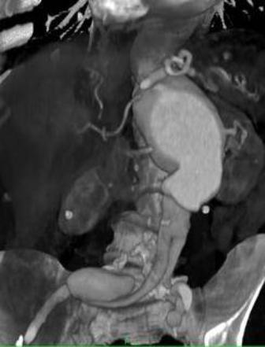
abdominal aortic aneurysmCourtesy Alan R, Melton, M.D, New York Presbyterian Hospital
" onclick="openLightbox(this)">Courtesy Alan R, Melton, M.D, New York Presbyterian Hospital
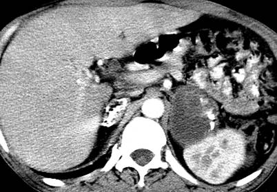
Adrenal tuberculosisCourtesy Alan R, Melton, M.D, New York Presbyterian Hospital
" onclick="openLightbox(this)">Courtesy Alan R, Melton, M.D, New York Presbyterian Hospital
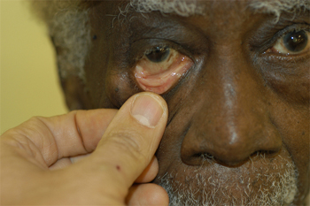
This person might have anemia. All dialysis patients should be carefully assessed for pallor. The conjunctiva are considered pale when no blood vessels can be seen. This suggests anemia. A hemoglobin level will quickly determine its presence. " onclick="openLightbox(this)">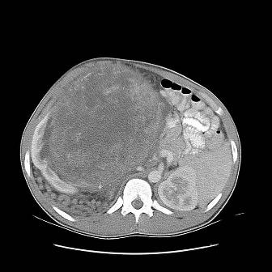
angiolipomaCourtesy Alan R, Melton, M.D, New York Presbyterian Hospital
" onclick="openLightbox(this)">Courtesy Alan R, Melton, M.D, New York Presbyterian Hospital
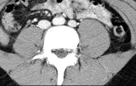
Bilateral ivcsCourtesy Alan R, Melton, M.D, New York Presbyterian Hospital
" onclick="openLightbox(this)">Courtesy Alan R, Melton, M.D, New York Presbyterian Hospital
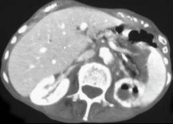
emphysematous pyelonephritisCourtesy Alan R, Melton, M.D, New York Presbyterian Hospital
" onclick="openLightbox(this)">Courtesy Alan R, Melton, M.D, New York Presbyterian Hospital
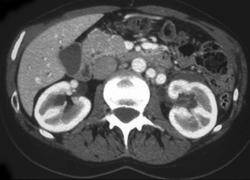
Enlarged left renal veinCourtesy Alan R, Melton, M.D, New York Presbyterian Hospital
" onclick="openLightbox(this)">Courtesy Alan R, Melton, M.D, New York Presbyterian Hospital
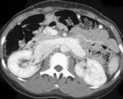
Enlarged left renal veinCourtesy Alan R, Melton, M.D, Columbia Presbyterian Hospital
" onclick="openLightbox(this)">Courtesy Alan R, Melton, M.D, Columbia Presbyterian Hospital
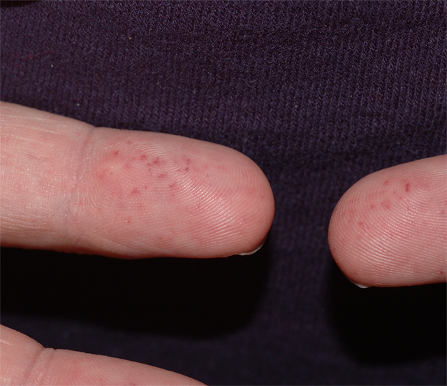
Fabry's Diseasephoto by Stephen Z. Fadem, M.D., FASN
" onclick="openLightbox(this)">photo by Stephen Z. Fadem, M.D., FASN
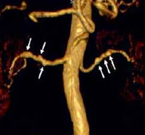
Fibromuscular dysplasiaCourtesy Alan R, Melton, M.D, New York Presbyterian Hospital
" onclick="openLightbox(this)">Courtesy Alan R, Melton, M.D, New York Presbyterian Hospital
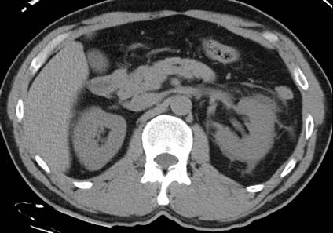
Fluid in pararenal space secondary to interstitial extravasation from distal obstructing stoneCourtesy Alan R, Melton, M.D, New York Presbyterian Hospital
" onclick="openLightbox(this)">Courtesy Alan R, Melton, M.D, New York Presbyterian Hospital
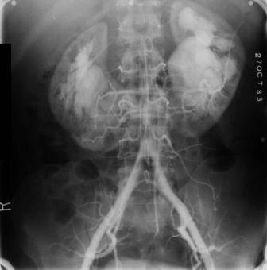
horseshoe kidneyCourtesy Alan R, Melton, M.D, New York Presbyterian Hospital
" onclick="openLightbox(this)">Courtesy Alan R, Melton, M.D, New York Presbyterian Hospital
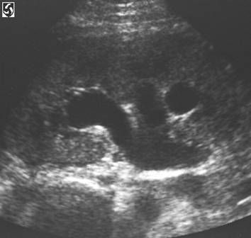
hydronephrosis - ultrasoundCourtesy Alan R, Melton, M.D, New York Presbyterian Hospital
" onclick="openLightbox(this)">Courtesy Alan R, Melton, M.D, New York Presbyterian Hospital
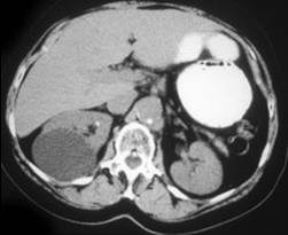
Kidney cystCourtesy Alan R, Melton, M.D, New York Presbyterian Hospital
" onclick="openLightbox(this)">Courtesy Alan R, Melton, M.D, New York Presbyterian Hospital
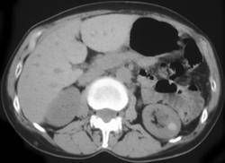
kidney cystCourtesy Alan R, Melton, M.D, New York Presbyterian Hospital
" onclick="openLightbox(this)">Courtesy Alan R, Melton, M.D, New York Presbyterian Hospital
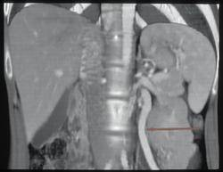
Enlarged left gonadal veinCourtesy Alan R, Melton, M.D, New York Presbyterian Hospital
" onclick="openLightbox(this)">Courtesy Alan R, Melton, M.D, New York Presbyterian Hospital
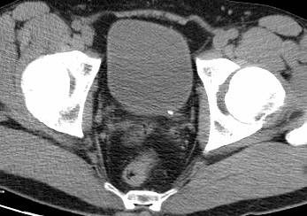
left uv stoneCourtesy Alan R, Melton, M.D, New York Presbyterian Hospital
" onclick="openLightbox(this)">Courtesy Alan R, Melton, M.D, New York Presbyterian Hospital
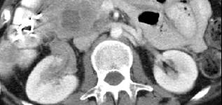
Lymphoma involving renal pelvis and peripancreatic nodesCourtesy Alan R, Melton, M.D, New York Presbyterian Hospital
" onclick="openLightbox(this)">Courtesy Alan R, Melton, M.D, New York Presbyterian Hospital
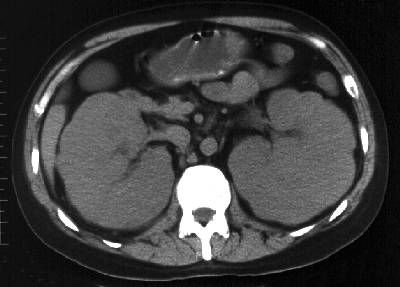
lymphoma - kidneyCourtesy Alan R, Melton, M.D, New York Presbyterian Hospital
" onclick="openLightbox(this)">Courtesy Alan R, Melton, M.D, New York Presbyterian Hospital
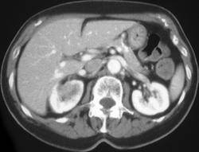
Metastasis to right kidney from lungCourtesy Alan R, Melton, M.D, New York Presbyterian Hospital
" onclick="openLightbox(this)">Courtesy Alan R, Melton, M.D, New York Presbyterian Hospital
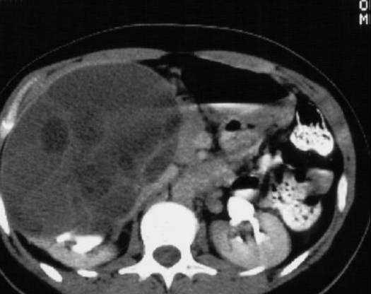
Multilocular renal cystic nephromacourtesy Alan R, Melton, M.D, New York Presbyterian Hospital
" onclick="openLightbox(this)">courtesy Alan R, Melton, M.D, New York Presbyterian Hospital
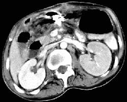
Nutcracker Syndrome - decreased function lt kidney due tp partial or subtotal obstruction left renal vein as it is compressed between superior mesenteric artery and aorta as it crosses midlinecourtesy Alan S, Melton, M.D, New York Presbyterian University
" onclick="openLightbox(this)">courtesy Alan S, Melton, M.D, New York Presbyterian University
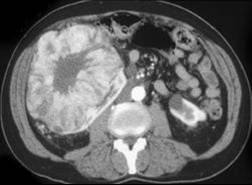
oncocytomacourtesy Alan S, Melton, M.D, New York University
" onclick="openLightbox(this)">courtesy Alan S, Melton, M.D, New York University
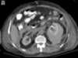
perinephric hematomaCourtesy Alan R, Melton, M.D, New York Presbyterian Hospital
" onclick="openLightbox(this)">Courtesy Alan R, Melton, M.D, New York Presbyterian Hospital
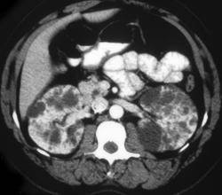
Polycystic kidneyscourtesy Alan S, Melton, M.D, New York Presbyterian Hospital
" onclick="openLightbox(this)">courtesy Alan S, Melton, M.D, New York Presbyterian Hospital
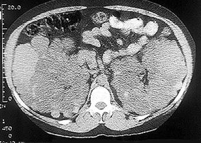
Polycystic kidneys without contrastCourtesy Alan R, Melton, M.D, New York Presbyterian Hospital
" onclick="openLightbox(this)">Courtesy Alan R, Melton, M.D, New York Presbyterian Hospital
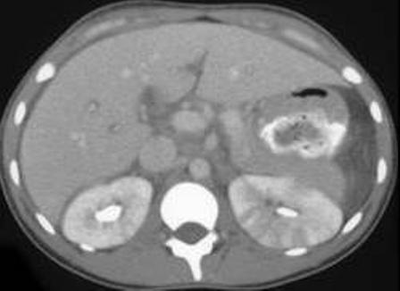
pyelonephritisCourtesy Alan R, Melton, M.D, New York Presbyterian Hospital
" onclick="openLightbox(this)">Courtesy Alan R, Melton, M.D, New York Presbyterian Hospital

Courtesy Alan R, Melton, M.D, New York Presbyterian Hospital
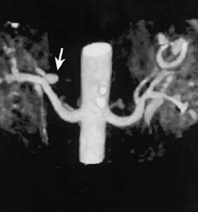
Renal artery aneurysmCourtesy Alan R, Melton, M.D, New York Presbyterian Hospital
" onclick="openLightbox(this)">Courtesy Alan R, Melton, M.D, New York Presbyterian Hospital
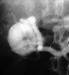
Renal artery aneursymCourtesy Alan R, Melton, M.D, New York Presbyterian Hospital
" onclick="openLightbox(this)">Courtesy Alan R, Melton, M.D, New York Presbyterian Hospital
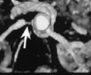
Renal artery stenosisCourtesy Alan R, Melton, M.D, New York Presbyterian Hospital
" onclick="openLightbox(this)">Courtesy Alan R, Melton, M.D, New York Presbyterian Hospital
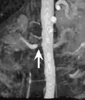
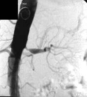
Renal artery stenosiscourtesy Alan R, Melton, M.D, New York Presbyterian Hospital
" onclick="openLightbox(this)">courtesy Alan R, Melton, M.D, New York Presbyterian Hospital
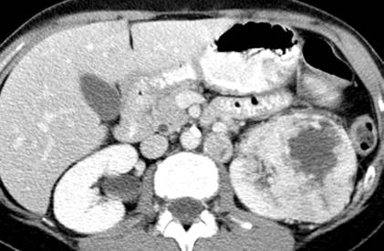
Renal cell carcinoma with necrosis after contrastCourtesy Alan R, Melton, M.D, New York Presbyterian Hospital
" onclick="openLightbox(this)">Courtesy Alan R, Melton, M.D, New York Presbyterian Hospital
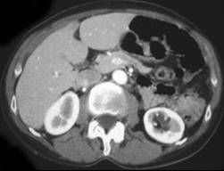
renal cysts - contrastCourtesy Alan R, Melton, M.D, New York Presbyterian Hospital
" onclick="openLightbox(this)">Courtesy Alan R, Melton, M.D, New York Presbyterian Hospital
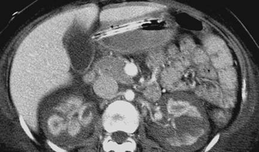
Renal infarcts from sickle cell anemiaCourtesy Alan R, Melton, M.D, New York Presbyterian Hospital
" onclick="openLightbox(this)">Courtesy Alan R, Melton, M.D, New York Presbyterian Hospital
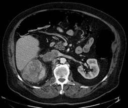
Renal vein thrombosis - tumor thrombus from right renal cell carcinomaCourtesy Alan R, Melton, M.D, New York Presbyterian Hospital
" onclick="openLightbox(this)">Courtesy Alan R, Melton, M.D, New York Presbyterian Hospital

Courtesy Alan R, Melton, M.D, New York Presbyterian Hospital

Courtesy Alan R, Melton, M.D, New York Presbyterian Hospital
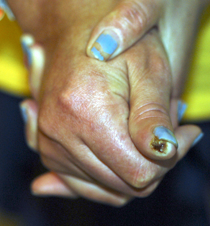
Scleroderma " onclick="openLightbox(this)">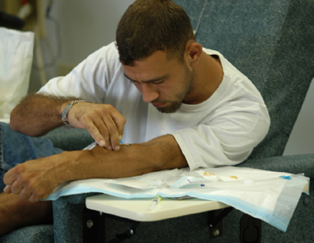
The AV Fistula " onclick="openLightbox(this)">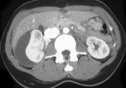
Subcapsular hematoma from traumaCourtesy Alan R, Melton, M.D, New York Presbyterian Hospital
" onclick="openLightbox(this)">Courtesy Alan R, Melton, M.D, New York Presbyterian Hospital

Courtesy Alan R, Melton, M.D, New York Presbyterian Hospital

Courtesy Alan R, Melton, M.D, New York Presbyterian Hospital

courtesy Alan R, Melton, M.D, New York Presbyterian Hospital

courtesy Alan R, Melton, M.D, New York Presbyterian Hospital
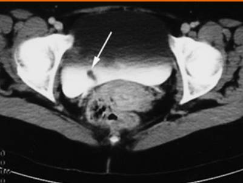
Ureteral polypCourtesy Alan R, Melton, M.D, New York Presbyterian Hospital
" onclick="openLightbox(this)">Courtesy Alan R, Melton, M.D, New York Presbyterian Hospital
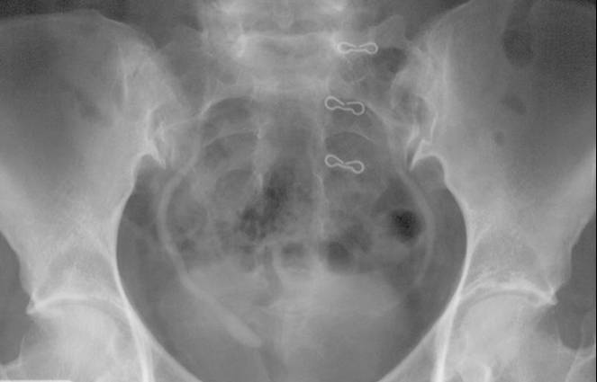
UreteroceleCourtesy Alan R, Melton, M.D, New York Presbyterian Hospital
" onclick="openLightbox(this)">Courtesy Alan R, Melton, M.D, New York Presbyterian Hospital
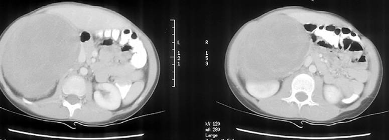
Wilm's TumorCourtesy Alan R, Melton, M.D, New York Presbyterian Hospital
" onclick="openLightbox(this)">Courtesy Alan R, Melton, M.D, New York Presbyterian Hospital
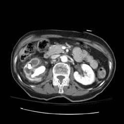
Xanthogranulomatous pyelonephritisCourtesy Alan R, Melton, M.D, New York Presbyterian Hospital
" onclick="openLightbox(this)">Courtesy Alan R, Melton, M.D, New York Presbyterian Hospital